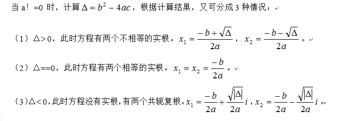
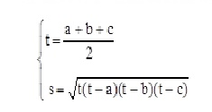

【题目描述】
输入系数a、b和c，求方程ax2+bx+c＝0的根。
【输入格式】
输入数据有多组。每组数据包括三个系数a,b,c。当a=0时，输入数据结束。
【输出格式】
输出方程的根，格式参见输出样例，保留到小数点后2位。
【输入样例】
1 2 1
1.0 -4.0 3.0
1.5 2.0 1.5
0 0 0
【输出样例】
x1=x2=-1.00
x1=3.00,x2=1.00
x1=-0.67+0.75i,x2=-0.67-0.75i
根据输入的系数a，可以分为a不等于0和a等于0两种情况。

当a==0时，结束输入计算。
程序可以写成if的嵌套结构。
#include <stdio.h>
#include <math.h>
int main()
{
double a,b,c,dlt,real,imag,x1,x2;
while (1)
{
scanf("%lf%lf%lf",&a,&b,&c);
if (a==0) break;
dlt=b*b-4*a*c;
if (dlt>0)
{
x1=(-b+sqrt(dlt))/(2*a);
x2=(-b-sqrt(dlt))/(2*a);
printf("x1=%.2f,x2=%.2f\n",x1,x2);
}
else if (dlt==0)
{
x1=x2=(-b)/(2*a);
printf("x1=x2=%.2f\n",x1);
}
else
{
real=(-b)/(2*a);
imag=sqrt(-dlt)/(2*a);
printf("x1=%.2f+%.2fi,x2=%.2f-%.2fi\n",real,imag,real,imag);
}
}
return 0;
}
【题目描述】
任意输入三条边（a，b，c实型），若能构成三角形，则计算并输出其面积，否则输出标志“No Triangle！”。
三角形面积计算公式：

【输入格式】
输入数据有多组。每组数据包括三个数a,b,c，代表三角形的三个边长。当a=0时，输入数据结束。
【输出格式】
输出三角形的面积，保留到小数点后2位。或者No Triangle!信息，若给定的三个边长值不能构成一个三角形。
【输入样例】
3 4 5
6.0 6.0 6.0
1 1 3
0 0 0
【输出样例】
6.00
15.59
No Triangle!
（1）编程思路。
输入的a、b、c三个数，只有当a+b>c、a+c>b和b+c>a同时满足时，才能构成一个三角形。因此，用选择结构
if (a+b>c && a+c>b && b+c>a)
{ 计算三角形面积并输出； }
else
{ 输出不能构成三角形的提示信息； }
（2）源程序。
#include <stdio.h>
#include <math.h>
int main()
{
float a,b,c,t,s;
while (1)
{
scanf("%f%f%f",&a,&b,&c);
if (a==0) break;
if (a+b>c && a+c>b && b+c>a)
{
t=(a+b+c)/2.0;
s=sqrt(t*(t-a)*(t-b)*(t-c));
printf("%.2f\n",s);
}
else
printf("No Triangle!\n");
}
return 0;
}
本题选自洛谷题库 （https://www.luogu.org/problem/P1422）。
【题目描述】
夏天到了，各家各户的用电量都增加了许多，相应的电费也交的更多了。小玉家今天收到了一份电费通知单。小玉看到上面写：据闽价电[2006]27号规定，月用电量在150千瓦时及以下部分按每千瓦时0.4463元执行，月用电量在151~400千瓦时的部分按每千瓦时0.4663元执行，月用电量在401千瓦时及以上部分按每千瓦时0.5663元执行;小玉想自己验证一下，电费通知单上应交电费的数目到底是否正确呢。请编写一个程序，已知用电总计，根据电价规定，计算出应交的电费应该是多少。
【输入格式】
输入一个整数，表示用电总计（单位以千瓦时计），不超过10000。
【输出格式】
输出一个数，保留到小数点后1位（单位以元计，保留到小数点后1位）。
【输入样例】
267
【输出样例】
121.5
（1）编程思路。
根据月用电量x的情况，其计费规则分为三个梯度。
在第一梯度（x<=150），电费y = 第一梯度单位电费*用电量=0.4463*x；
在第二梯度（150<x<=400），电费y=第二梯度部分用电*第二梯度部分单位电费+在第一梯度用电*第一梯度单位电费 =(x-150)*0.4663+150*0.4463。
在第三梯度（x>400），电费y=第三梯度部分用电*第三梯度部分单位电费+第二梯度部分用电*第二梯度部分单位电费+在第一梯度用电*第一梯度单位电费 =(x-400)*0.5663 +250*0.4663+150*0.4463。
一个简单的多分支结构即可解决。
（2）源程序。
#include <stdio.h>
int main()
{
int x;
double y;
scanf("%d",&x);
if (x<=150) y=0.4463*x;
else if (x<=400) y=150*0.4463+(x-150)*0.4663;
else y=150*0.4463+250*0.4663+(x-400)*0.5663;
printf("%.1lf\n",y);
return 0;
}
本题选自洛谷题库 （https://www.luogu.org/problem/P1909）。
【题目描述】
P老师需要去商店买n支铅笔作为小朋友们参加NOIP的礼物。她发现商店一共有 3种包装的铅笔，不同包装内的铅笔数量有可能不同，价格也有可能不同。为了公平起 见，P老师决定只买同一种包装的铅笔。
商店不允许将铅笔的包装拆开，因此P老师可能需要购买超过n支铅笔才够给小朋友们发礼物。
现在P老师想知道，在商店每种包装的数量都足够的情况下，要买够至少n支铅笔最少需要花费多少钱。
【输入格式】
第一行包含一个正整数n，表示需要的铅笔数量。
接下来三行，每行用2个正整数描述一种包装的铅笔：其中第1个整数表示这种包装内铅笔的数量，第2个整数表示这种包装的价格。
保证所有的7个数都是不超过10000的正整数。
【输出格式】
1个整数，表示P老师最少需要花费的钱。
【输入样例】
57
2 2
50 30
30 27
【输出样例】
54
（1）编程思路。
设P老师需要购买的铅笔数为n，某种包装内铅笔的数量为a，这种包装的价格为b。P老师需要购买某种包装铅笔的包装数为c。
显然，若n能整除a，则c=n/a；否则c=n/a+1。
求三种包装的c*b的最小值即可。
（2）源程序。
#include <stdio.h>
int main()
{
int n,a,b,c,i,min;
scanf("%d",&n);
scanf("%d%d",&a,&b);
if (n%a==0) c=n/a;
else c=n/a+1;
min=c*b;
for (i=1;i<=2;i++)
{
scanf("%d%d",&a,&b);
if (n%a==0) c=n/a;
else c=n/a+1;
if (min>c*b) min=c*b;
}
printf("%d\n",min);
return 0;
}